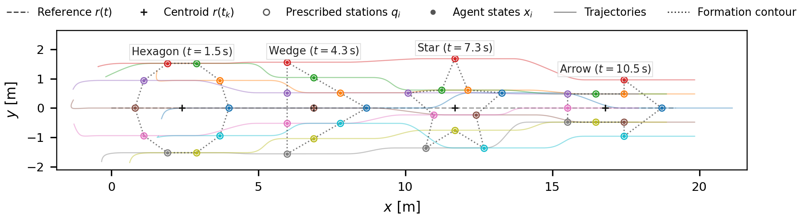
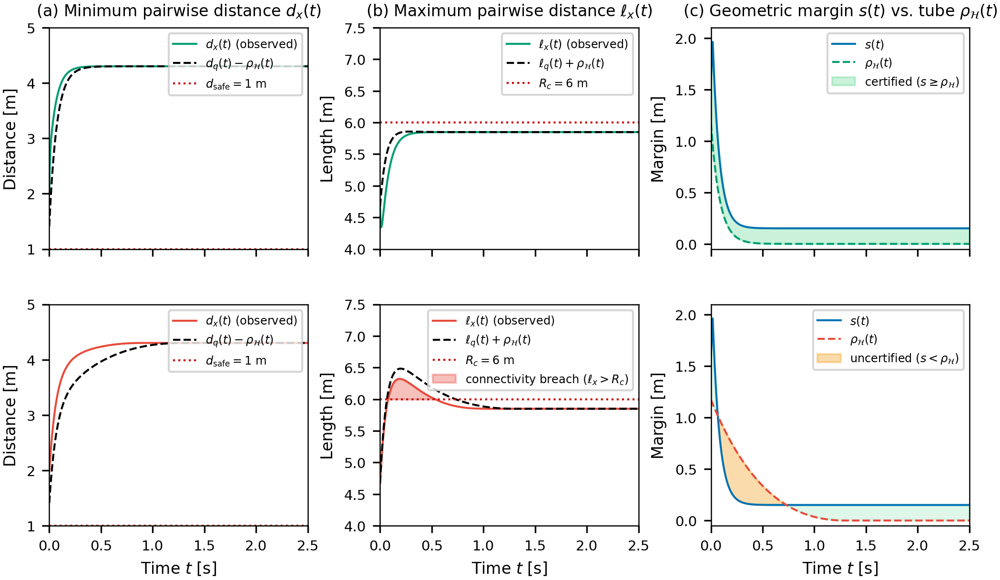
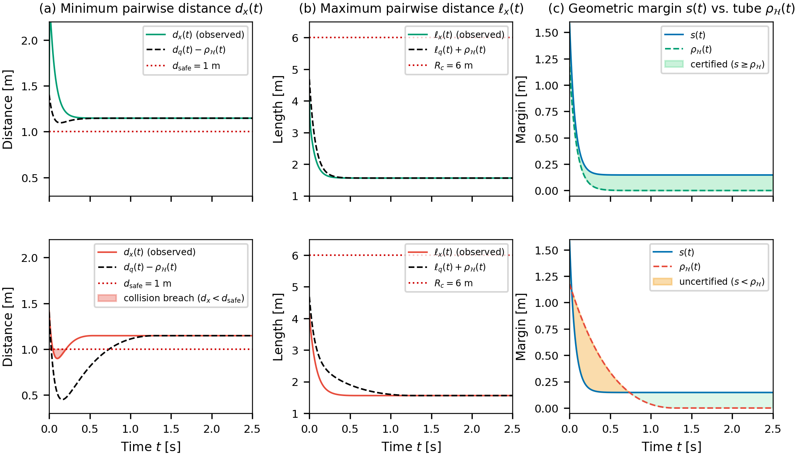

Finite-Time Tracking of Arbitrary Swarm Formations with Safety and Connectivity Certificates

Abstract
Certifying finite arrival times and convergence rates is essential for coordinating multi-agent systems in time-critical missions. However, convergence to a desired formation does not, by itself, guarantee collision avoidance or communication connectivity during transients. Existing swarm models can achieve finite-time tracking of collective variables, but may not provide independent settling guarantees for agents at arbitrarily prescribed stations. This paper proposes a first-order control framework for tracking arbitrary, time-varying formation stations relative to a moving reference. A component-wise fractional-power feedback ensures exact finite-time station tracking with an explicit settling-time bound independent of the interaction graph. To address transient safety, a graph-dependent exponential bound on relative disagreement is derived that remains valid for time-varying and switching graphs, including disconnected modes. Combining this bound with the geometry of the prescribed stations yields sufficient conditions for pairwise collision avoidance and preservation of a connected spanning communication backbone. These conditions further provide a coupling-gain design rule based on the available geometric clearance throughout the maneuver. Numerical simulations illustrate finite-time tracking, transient formation deformation, and the effectiveness and conservatism of the proposed safety and connectivity certificates.
Methodology
We formulate a distributed first-order kinematic guidance framework for $n$ agents moving in $\mathbb{R}^d$ ($d \ge 2$). Rather than restricting the swarm to rigid or self-organizing flocking configurations, each agent is assigned an independent, continuously differentiable station trajectory relative to a time-varying virtual leader or reference centroid:
where $r(t) \in \mathbb{R}^d$ represents the reference trajectory, $p_i(t) \in \mathbb{R}^d$ is the local formation offset of agent $i$, and $\delta_i(t)$ is its tracking error. The proposed distributed velocity control law is defined as:
where $[\Phi_\beta(z)]_k = \operatorname{sign}(z_k)|z_k|^\beta$ ($0 < \beta < 1$) is a component-wise fractional-power feedback, $M \in \mathbb{R}^{d \times d}$ is a symmetric positive semi-definite cooperative coupling matrix ($M = m I_d$ with coupling gain $m \ge 0$), and $w_{ij}(t) \ge 0$ are symmetric, distance-dependent weights with uniform lower bound $\underline{w} = (R_c^\nu + \varepsilon_w)^{-1}$ on active links.
Core Theoretical Claims
Every agent tracks its assigned station trajectory $\delta_i(t) \to 0$ exactly within a deterministic finite-time settling deadline: $$T = \frac{1}{1-\beta} \ln\left(1 + \|\delta(0)\|_2^{1-\beta}\right)$$ The settling deadline $T$ is strictly independent of the interaction graph, edge weights, or network disconnections, providing guaranteed temporal arrival in time-critical missions.
Decomposing tracking errors into average motion $\bar{\delta}$ and relative disagreement $\eta_i = \delta_i - \bar{\delta}$, the disagreement dynamics decouple and contract exponentially: $$\|\eta(t)\|_2 \le \|\eta(0)\|_2 e^{-\gamma_{\mathcal{H}} t}, \qquad \gamma_{\mathcal{H}} = 1 + \underline{w}\lambda_2(L_{\mathcal{H}})\lambda_{\min}(M)$$ where $L_{\mathcal{H}}$ is the graph Laplacian of a designer-selected spanning communication backbone $\mathcal{H}$.
Given physical collision threshold $d_{\mathrm{safe}}$ and sensing/communication radius $R_c$, let the nominal geometric clearance margin be: $$s(t) = \min\left\{\min_{i \ne j} \left(\|q_i(t) - q_j(t)\|\right) - d_{\mathrm{safe}}, \; R_c - \max_{(i,j) \in \mathcal{E}_{\mathcal{H}}} \left(\|q_i(t) - q_j(t)\|\right)\right\}$$ If $s(t) > \rho_{\mathcal{H}}(t)$ for all $t \in [0, T]$, then pairwise collision avoidance ($d_{x,\min} > d_{\mathrm{safe}}$) and connected spanning backbone persistence ($\ell_{x,\max} < R_c$) are strictly guaranteed throughout the transient.
The minimum required disagreement decay rate is computed offline directly from the planned maneuver: $\gamma_{\mathrm{req}} = \sup_{t \in [0, T]} \frac{1}{t}\ln(\frac{\rho_0}{s(t)})$. Choosing coupling gain: $$m \ge \frac{\gamma_{\mathrm{req}} - 1}{\underline{w}\lambda_2(L_{\mathcal{H}})}$$ sufficiently certifies transient safety prior to mission deployment without modifying the nominal tracking feedback.
Results
Quantitative Verification
We evaluate the framework through numerical simulations with $n=10$ agents in $\mathbb{R}^2$.
Finite-Time Tracking & Coupling-Gain Trade-offs
Increasing the cooperative coupling gain $m$ accelerates disagreement dissipation without altering the graph-independent deadline $T \approx 1.3621$ s, at the expense of a modest increase in peak initial control effort.
| Coupling Gain $m$ | Numerical Settling $t_{10^{-6}}$ (s) | Theoretical Deadline $T$ (s) | Peak Effort $\|u\|_2$ | Control Energy $J_u$ |
|---|---|---|---|---|
| $0.0$ | $1.1517$ | $1.3621$ | $16.9828$ | $429.44$ |
| $0.5$ | $0.8117$ | $1.3621$ | $17.0860$ | $429.92$ |
| $2.0$ | $0.5250$ | $1.3621$ | $18.0322$ | $431.55$ |
| $5.0$ | $0.4467$ | $1.3621$ | $22.2186$ | $434.95$ |
| $10.0$ | $0.3933$ | $1.3621$ | $32.8156$ | $440.74$ |
Table 1: Settling times and control metrics across coupling gains $m$ under rotating star formation ($\kappa=2.0$).
Transient Safety and Connectivity Outcomes
Stress-testing under aggressive star compression and expansion verifies that certified gains strictly maintain positive margin clearances $\Delta_{\min} = \min_{t\in[0,T]}[s(t)-\rho_{\mathcal{H}}(t)] > 0$, guaranteeing collision avoidance and connectivity preservation.
| Maneuver | Case | $m$ | $\kappa$ | $\gamma_{\mathcal{H}}$ | $\gamma_{\mathrm{req}}$ | $t_{10^{-6}}$ (s) | $d_{x,\min}$ (m) | $\ell_{x,\max}$ (m) | $\Delta_{\min}$ (m) | Observed Outcome |
|---|---|---|---|---|---|---|---|---|---|---|
| Compression | Certified | 30.0 | 5.0 | 5.6194 | 4.4882 | 0.3800 | 1.0326 | 4.0338 | 0.0338 | Safe and connected |
| Uncertified | 0.0 | 5.0 | 1.0000 | 4.4882 | 1.1517 | 0.8605 | 4.0338 | $\le 0$ | Collision observed | |
| Expansion | Certified | 30.0 | 8.0 | 5.6194 | 4.1367 | 0.3767 | 1.8550 | 5.8880 | 0.0909 | Safe and connected |
| Uncertified | 0.0 | 8.0 | 1.0000 | 4.1367 | 1.1333 | 1.8550 | 6.1424 | $\le 0$ | Range violation observed |
Table 2: Certificate and observed transient-geometry outcomes for aggressive star maneuvers ($t\in[0,2.5]$ s).
Experimental Visualizations
Browse the visual trajectory plots and transient verification metrics across the experimental scenarios:

Swarm Formation Snapshots: Overhead time-lapse of agents converging from perturbed initial positions into the rotating star formation.

Constrained Corridor Traversal: Smooth formation morphing from a ring into a slender chevron to navigate the narrow corridor and subsequent ring recovery.

Tracking & Disagreement: Station tracking convergence, exponential disagreement dissipation, and transient control commands across coupling gains.

Transient Connectivity (Expansion): Inter-agent distances and communication range preservation across backbone links under certified versus uncertified tracking.

Transient Safety (Compression): Minimum pairwise separation and geometric margin clearance under certified versus uncertified tracking, demonstrating collision avoidance.
Qualitative Video Demonstrations
Side-by-side comparison illustrating the crucial role of cooperative coupling in guaranteeing transient collision avoidance:
Certified Safe Formation Maneuver
Cooperative coupling accelerates disagreement dissipation to preserve a positive geometric clearance margin, ensuring collision avoidance throughout aggressive star contraction.
Uncertified Baseline with Collision
Without cooperative coupling, independent tracking lag distorts the formation and breaches the nominal clearance margin, resulting in an inter-agent collision.
BibTeX
@article{purswani2026finitetime,
title = {Finite-Time Tracking of Arbitrary Swarm Formations with Safety and Connectivity Certificates},
author = {Purswani, Yash and Agarwal, Shivansh and Tiwari, Anuj},
year = {2026},
url = {https://github.com/yash-purswani/finite-time-swarm-control}
}